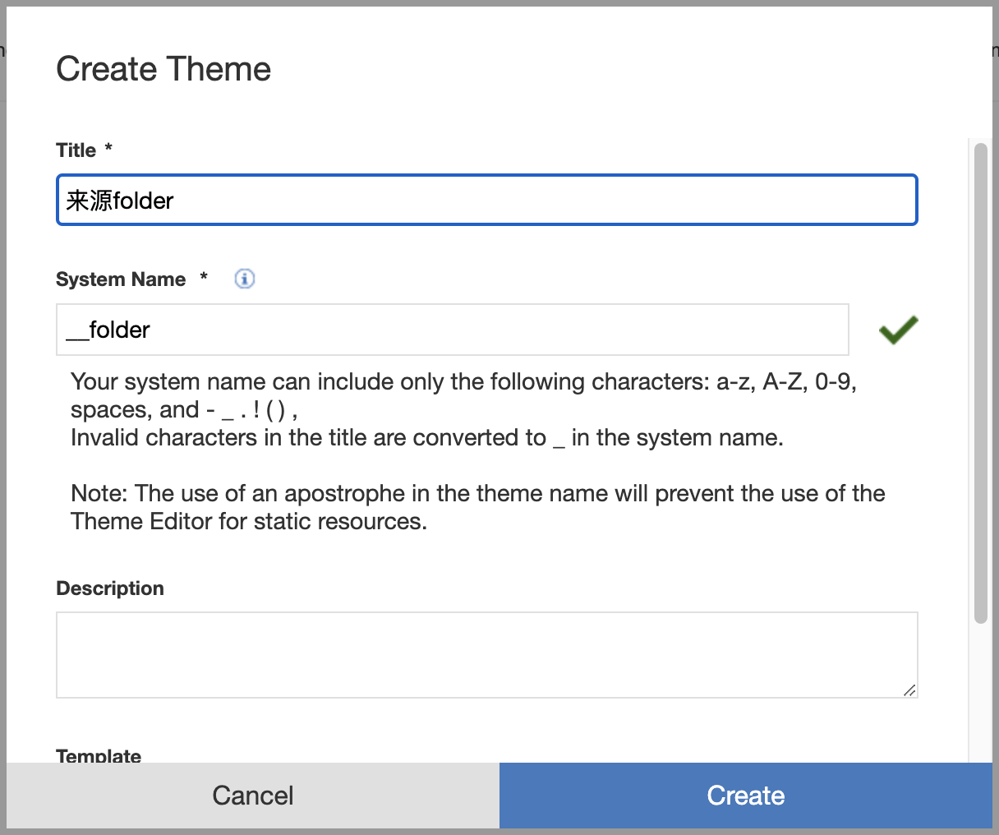
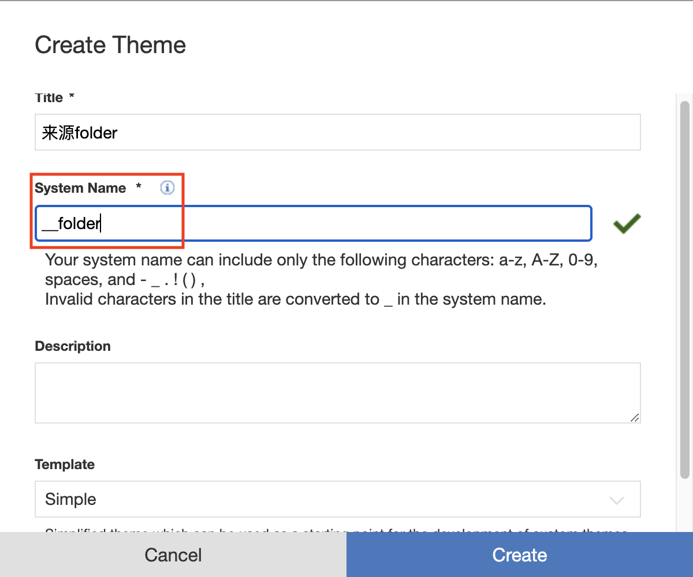

LiveSync
This topic provides information about syncing WebDAV-based theme from local-to-server and server-to-local in real time. LiveSync watches the file system for changes in the background and reflects them in the DX server.
It is recommended that you use the node version of the DXClient while working with LiveSync. LiveSync is supported in scaled DX environment setups.
Note
You can trigger all LiveSync commands from within the target local theme path.
LiveSync Push Theme
This command will sync your WebDAV based theme files into DX Server. Then, it will watch for succeeding changes within the given themePath and immediately reflect the changes in the DX server.
-
Command description
This command invokes the livesync push-theme tool inside the DXClient.
This command initially pushes the local theme (provided in
themePath) in WebDAV Server with the theme system name (provided inthemeName). It will then create a file system watcher which will watch for any changes (files or folders) underthemePathand immediately reflect those changes in WebDAV Server. To stop watching, press (Ctrl + C).dxclient livesync push-theme -
Help command
This command shows the help document on the
livesync push-themecommand usage:dxclient livesync push-theme -h -
Required files
- WebDAV-based theme files in local
- A registered Theme in server
-
Common command attributes
Use this attribute to specify the protocol with which to connect to the DX server (`wp_profile`):-dxProtocol <value>Use this attribute to specify the hostname of the target DX server:-hostname <value>Use this attribute to specify the port on which to connect to the DX server (`wp_profile`):-dxPort <value>Use this attribute to specify the username to authenticate with the DX server (`wp_profile`):-dxUsername <value>Use this attribute to specify the password for the user in the `dxUsername` attribute:-dxPassword <value>Use this attribute to specify the path to the contenthandler servlet on the DX server (for example, /wps/mycontenthandler):-contenthandlerPath <value>Use the Disable Prompt attribute to disable the confirmation prompt for overwriting local and server files. This bypasses the prompt and immediately proceeds to pushing theme files.-disablePrompt, --disablePrompt <value> -
Required attribute for LiveSync Push Theme
Use this attribute to specify the Theme System Name of the theme created under DX server:-themeName <value>Difference between Theme System Name and Theme Title
The Theme System Name can only have the following characters:
a-z,A-Z,0-9,spaces, and- _ . ! ( ) ,. Invalid characters in the title are converted to underscore "_" in the system name by default. The Theme Title can include any characters.
Use this attribute to specify the theme folder path that contains all static WebDAV based files to be pushed into DX theme, it accepts the folder path of the WebDAV based theme folder:
-themePath <value>Warning
- Avoid using
~!()'and*special characters when naming files and folders. - If you have a theme title name with special characters, those are automatically converted to underscores (
_) by the server (for example,来源folderis translated to__folder). For the theme name, use the Theme System Name, the one with_like__folderin the following example.

- Avoid using
Example
dxclient livesync push-theme -dxUsername <dxUsername> -dxPassword <dxPassword> -dxPort <dxPort> -dxProtocol <dxProtocol> -hostname <hostname> -contenthandlerPath <contenthandlerPath> -themePath <themePath> -themeName <themeSystemName>
Ignoring Files
You can opt to ignore files and folder paths to push to the server by creating an ignore file (.ignore) under the root of the theme folder (the theme that is provided in --themePath).
When changing the contents of the ignore file, the command needs to be re-run again to reflect the files that needs to be ignored.
Sample .ignore file contents:
#.ignore
.DS_Store
logs/
LiveSync Pull Theme
This command is used to sync a theme from a DX WebDAV based theme on a remote server to a local folder.
-
Command description
This command invokes the livesync push-theme tool inside the DXClient.
This command will download the WebDAV based theme files in WebDAV Server under the given theme system name (provided in
-themeName). This will then be saved to the target local directory of the theme (provided in-themePath), overwriting existing files in this local directory which also deletes stale files in the process.dxclient livesync pull-theme -
Help command
This command shows the help document on the
livesync pull-themecommand usage:dxclient livesync pull-theme -h -
Required files
- A local folder where all the WebDAV-based theme files will be placed after downloading
- A registered WebDAV-based Theme in server
-
Common command attributes
Use this attribute to specify the protocol with which to connect to the DX server (`wp_profile`):-dxProtocol <value>Use this attribute to specify the hostname of the target DX server:-hostname <value>Use this attribute to specify the port on which to connect to the DX server (`wp_profile`):-dxPort <value>Use this attribute to specify the username to authenticate with the DX server (`wp_profile`):-dxUsername <value>Use this attribute to specify the password for the user in the `dxUsername` attribute:-dxPassword <value>Use this attribute to specify the path to the contenthandler servlet on the DX server (for example, /wps/mycontenthandler):-contenthandlerPath <value>Use the Disable Prompt attribute to disable the confirmation prompt for overwriting local and server files. This bypasses the prompt and immediately proceeds to pulling theme files.-disablePrompt, --disablePrompt <value> -
Required attribute for LiveSync Pull Theme
Use this attribute to specify the Theme System Name of the theme created under the DX server:-themeName <value>Starting from CF214, if
themeNameoption is not provided, a list of WebDAV themes is displayed and you can select a theme to pull into their local.$ dxclient livesync pull-theme -dxUsername <dxUsername> -dxPassword <dxPassword> -dxPort <dxPort> -dxProtocol <dxProtocol> -hostname <hostname> -contenthandlerPath <contenthandlerPath> -themePath <themePath> 2023-08-03 18:18:55 : Extracting themes list from xml 2023-08-03 18:18:55 : Please select a Theme name (x) My Theme ( ) Portal8.5 ( ) PractitionerStudio ( ) Simple ( ) ThemeDevSite ( ) Toolbar8.5Difference between Theme System Name vs. Theme Title
The Theme System Name can only have the following characters:
a-z,A-Z,0-9,spaces, and- _ . ! ( ) ,. Invalid characters in the title are converted to underscore "_" in the system name by default. The Theme Title can include any characters.Use this attribute to specify the theme folder path where DX theme static files should be placed. This attribute accepts a folder path:
-themePath <value>Warning
- Avoid using
~!()'and*special characters when naming files and folders. - If you have a theme title name with special characters, those are automatically converted to underscores (
_) by the server (for example,来源folderis translated to__folder). For the theme name, use the Theme System Name, the one with_like__folderin the following example.
- Avoid using
Example
dxclient livesync pull-theme -dxUsername <dxUsername> -dxPassword <dxPassword> -dxPort <dxPort> -dxProtocol <dxProtocol> -hostname <hostname> -contenthandlerPath <contenthandlerPath> -themePath <themePath> -themeName <themeSystemName>
Note that LiveSync Pull Theme commands can be triggered from within the target local theme path.
See the following example where '...' represents truncated parameters.
$ pwd
/Users/path/to/theme
dxclient livesync pull-theme --themePath "/Users/path/to/theme" --themeName "Portal8.5SyncTest" ...
Limitations and Troubleshooting
General
- If the real-time sync during the push command gets disrupted, disconnect and reconnect again.
- It is not recommended to use LiveSync on a production server.
- Conflict detection and resolutions are not implemented.
Themes
- The LiveSync Push Theme command does not register or unregister themes. For that, use Deploy Themes or Undeploy Themes commands.
- While multiple developers can use LiveSync on the same server, LiveSync restricts concurrent theme editing to one developer at a time. If another user is currently working on the same theme being pushed, LiveSync will not allow that user's changes to be pushed. Concurrent usage of this command on the same theme or using it along with Theme Editor, or WebDav, is not supported.
- Sequential usage of LiveSync on a single theme with different client operating systems (i.e., Windows and Mac) is not supported.
- Case sensitivity for naming files and folders is not supported.